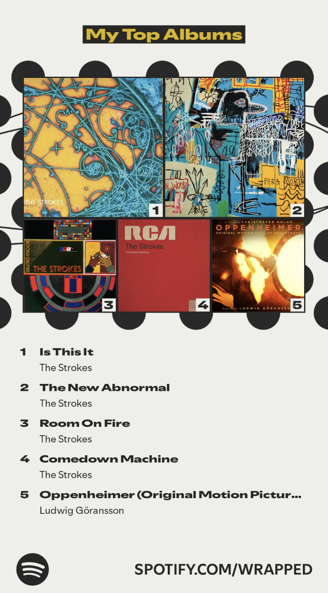

What I'm Grateful for and What I Hope for
Thanksgiving has just passed, and Christmas and the New Year are comping up. I wanted to write and reflect on everything that's happened in 2025, as well as my goals and hopes for the New Year.
Some Statistics
My top songs and bands. I need to diversify my music taste. The Strokes are the KD Warriors of my music taste.




I also watched some TV shows this year.
- How I Met Your Mother
- For All Mankind
- Andor
- Gen V
- Stranger Things
- The Last of Us
- Succession
- Euphoria
MMXXV CE
I think that this year has probably been the toughest year of my life, but also the one I felt that I've grown the most in. It's definitely been a year of learning. Academically, I've learned a lot in my courses, more than I have in any previous year. That has been very rewarding.It was this year that I really started to think about what I want to do with my life. A lot of my life up till now has been me following what everyone else was doing: study hard in high school, go to college, and get a job. I never really made a decison on what I wanted to do; I kept procrastinating it away. I think that there were definitely times I felt lost and purposeless, confused on what I wanted to do. I think that's a natural part of growing up. And I'm still uncertain about what I want to do. But I think that this whole period has allowed me reflect on who I am as a person and distill what I truly care about. I watched a lot of movies this year, but the one I watched the most and helped me when I was down was 3 Idiots (I strongly recommend you to watch it). There's one quote from the movie that's really motivated me this year:
Kaamyabi ke peeche mat bhaago, excellence ka peecha karo.
Excellence ka peecha karoge toh kaamyabi jhak maarke tumhaare peeche aayegi.
Excellence ka peecha karoge toh kaamyabi jhak maarke tumhaare peeche aayegi.
Pursue excellence, and success will follow automatically.
As part of that reflection, I often questioned my goals, whether some of them were even worth-it. That uncertainty naturally led me to somewhat fear the future and led me to considerably (and excessively) fear failure. There's this scene in 3 Idiots, where one of the characters, Raju, explains his path from being fine, to fear and despair, and his return. He talks about how he learned to stop worrying about failure and the future, how he achieved freedom from fear. That scene in particular really resonated with me. I think it's what I'm going to focus on the most in 2026.
There were also times I suprised myself with some crazy (probably unsafe) decisons. Some friends and I decided to go to Sequoia National Park. We went a couple days after this one trail opened up after the winter season. We arrived in the evening, with plans to hike through the night. But this was right after the trail opened; the snow covered the trail, and at night, visibility was horrid. The only way to know where we were going were these reflective markers on the trees, but sometimes they weren't really visible and we went in circles. We hiked several hours, but the snow and the altitude took its toll, and we were forced to stop.
Upon stopping, we used propane to light a fire, and we boiled water to eat some instant noodles. In the absence of any other source of light, the blue glow of the fire was surreal. It sort of felt like I was a caveman, huddling around a fire. That fire didn't generate much, if any, heat; this quickly became a problem for me. Movement generates a lot of heat; resting removes that source, and I quickly realized just how cold it was. Luckily, we began to hike again, and those problems went away. As someone who's lived in the city for my entire life, I don't think I've ever seen so many stars. Overall, the experience was incredibly unique, and I really enjoyed it.


I'm really grateful for all the people in my life; I might not say it very often, but I am very happy that you all exist. I'm grateful to be able to attend college; I'm grateful for my health. I'm grateful for being given all the opportunities that have been given to me. I probably live a better life than 99.9% of all humans who have ever existed or are existing; I've been lucky enough to be be given the chance to live in the most propserous and golden age of humanity.
year++
I'm decently hopeful for 2026. Some more academic goals I have:- Learn information theory: Information theory is really powerful. At theory lunch, I've heard "What's the information theoretic bound on this?" or some variant of that question or comment far too many times. One time I felt really good was in theory lunch, when I told my friend that you could put an information theoretic bound on something, and five minutes later, the speaker said exactly that. I don't know information theory, but it seems really cool.
- Finish the sparse matrix operation kernel: I hope to finish iterative solvers by the end of January, we'll see if that's doable. Hopefully we lock in.
- Get better at quantum mechanics: I'm going to have to do this if I want to pass Physics 221. I don't think I learned as much as I wanted from Physics 137B. I also really liked the path integral formulation, so it would be really nice to learn more about that. Noether's theorem is also very beautiful, and I look forward to seeing its applications in quantum mechanics.
- Have another go at spectral graph theory: We learned spectral graph theory in 270, but I didn't really understand it too well, and I didn't really enjoy that part of the class. But my friends say it's really beautiful, and I think that it has applications in things like Markov chain mixing, which we did do in 270, but I didn't really learn it that well.
- Write and film a short movie: This will be tough. I've wanted to do this for a long time. I don't have any ideas for a script or story, and I'm not very good at cinematography. Honestly, I don't know much about actually doing this sort of stuff. I'll probably try to get to this over the summer. There is also this music video that I want to film.
- Learn how to swim: If you pushed me into a pool right now, there's a good chance I drown.
- Cook something GOOD at least once a week: This one is definitely more achievable. I have a list of recipes that I want to try; hopefully, after buying some ingredients, I should be able to do this. Trying a dish from a new country every week is something that sounds fun. I also feel like my roommates and I have discovered many optimizations in cooking that could help.
- Write more blog posts: I think the best ways to actually understand something aro to teach it or to write about it. I'd like to aim to write at least one blog post every two weeks, preferably on cool things that I've learned. It also improves my writing skills.
- Freedom from Fear: The American People in Depression and War, 1929-1945,
- The Silmarillion,
- The Making of the Atomic Bomb,
- Labour in Power, 1945–1951,
- The Road to 1945: British Politics and the Second World War.
My TV show watchlist for 2026:
- Breaking Bad
- Better Call Saul
- Band of Brothers
- The Sopranos
- The Wire
- Game of Thrones
Closing Remarks
Towards the end of this year, I've found myself listening more and more to "Under Pressure" by Queen and David Bowie.The lyrics, particularly towards the end, really resonate with me (I strongly encourage you to listen to the song):
No man ask for
Under pressure that burns a building down
Splits a family in two
Puts people on streets...Can't we give ourselves one more chance?
'Cause love's such an old-fashioned word
And love dares you to care for
The people on the edge of the night
And love dares you to change our way of
Caring about ourselves.
Merry Christmas and a Happy New Year!
Sid